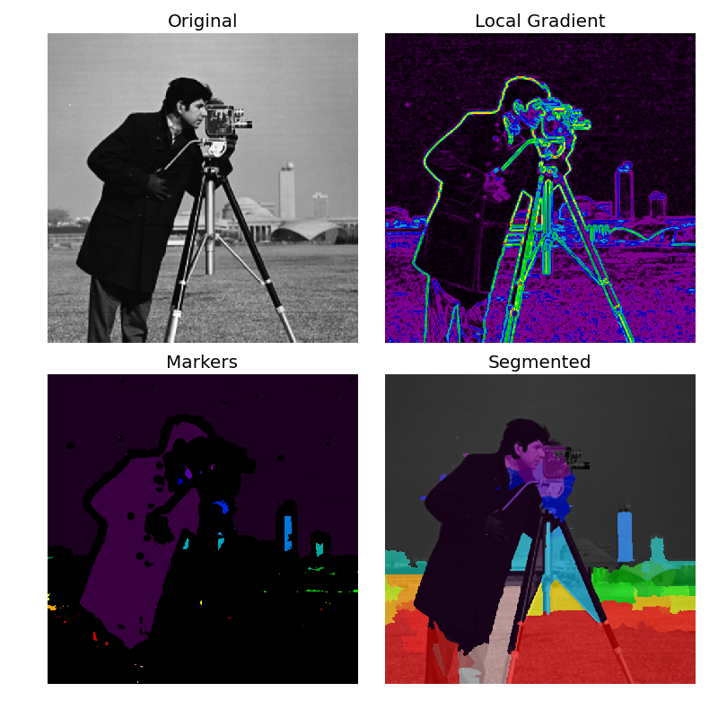

The watershed is a classical algorithm used for segmentation, that is, for separating different objects in an image.
Here a marker image is built from the region of low gradient inside the image. In a gradient image, the areas of high values provide barriers that help to segment the image. Using markers on the lower values will ensure that the segmented objects are found.
See Wikipedia for more details on the algorithm.

from scipy import ndimage as ndi
import matplotlib.pyplot as plt
from skimage.morphology import watershed, disk
from skimage import data
from skimage.filters import rank
from skimage.util import img_as_ubyte
image = img_as_ubyte(data.camera())
# denoise image
denoised = rank.median(image, disk(2))
# find continuous region (low gradient -
# where less than 10 for this image) --> markers
# disk(5) is used here to get a more smooth image
markers = rank.gradient(denoised, disk(5)) < 10
markers = ndi.label(markers)[0]
# local gradient (disk(2) is used to keep edges thin)
gradient = rank.gradient(denoised, disk(2))
# process the watershed
labels = watershed(gradient, markers)
# display results
fig, axes = plt.subplots(nrows=2, ncols=2, figsize=(8, 8), sharex=True, sharey=True, subplot_kw={'adjustable':'box-forced'})
axes = axes.ravel()
ax0, ax1, ax2, ax3 = axes
ax0.imshow(image, cmap=plt.cm.gray, interpolation='nearest')
ax0.set_title("Original")
ax1.imshow(gradient, cmap=plt.cm.spectral, interpolation='nearest')
ax1.set_title("Local Gradient")
ax2.imshow(markers, cmap=plt.cm.spectral, interpolation='nearest')
ax2.set_title("Markers")
ax3.imshow(image, cmap=plt.cm.gray, interpolation='nearest')
ax3.imshow(labels, cmap=plt.cm.spectral, interpolation='nearest', alpha=.7)
ax3.set_title("Segmented")
for ax in axes:
ax.axis('off')
fig.tight_layout()
plt.show()
Python source code: download
(generated using skimage 0.12.2)
IPython Notebook: download
(generated using skimage 0.12.2)
 Source
Source